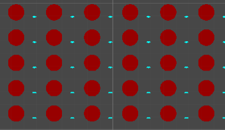
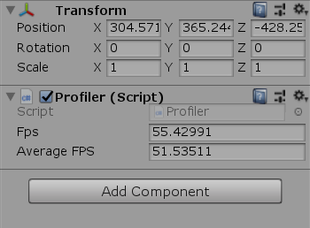

Loading the Gameworld in Sections (Unity)

Screenshot in the unity editor
In the following article I'm going to talk about how I handle a big-World in Unity. For "Argh, There she blows!", I plan the whole world to take place in one Scene. But as I plan to randomly generate a "World" (Universe would be the better term ;-)), with hunderts of Planets. It is clear that there has to happen some magic in the background to load/unload sections while playing.
Generating "endless" Planets and whales
To test my games actual performance I dublicated my "Planet and Whale" Example Section into a bigger Map. To achive this, I added the Planet and the whale into a "SectionPrefab" and dublicated it as shwon bellow.
Part of the class "WorldManager"
for (int x = 0; x < worldWidthInSections; x++)
{
for(int y = 0; y < worldHeightInSections; y++)
{
vector2Temp.x = x;
vector2Temp.y = y;
GameObject go = sectionGenerator.GenerateSection(new SectionPrefs(1, SectionTypes.empty, vector2Temp));
Section tempSection = go.GetComponent();
if(tempSection != null)
{
sections[x, y] = tempSection;
}
else
{
Debug.LogError("SectionGenerator must generate an object which consists of a Section Component");
}
}
}
As you can see bellow, I only Instantiate a Prefab of a GameObject (which in this case just holds my Example Planet (a circle) and a Whale (another - stretched - circle)).
The above used Methode: "SectionGenerator.GenerateSection(...)"
public GameObject GenerateSection(SectionPrefs sectionPrefs)
{
GameObject sectionGO = Instantiate(sectionPrefab);
sectionGO.GetComponent().InitSection(sectionPrefs);
//TODO: Actually generate the Section
return sectionGO;
}
View the result of the "generation" process.
Measuring Performance (FPS) in Unity
To measure the performance I used some code which I already implemented for AI-Buster. It calculates the current FPS
The Profiler class
[SerializeField]
private float fps;
[SerializeField]
private float averageFPS;
[...]
// Update is called once per frame
void Update()
{
fps = 1 / Time.deltaTime;
buffer[counter] = fps;
if(counter + 1 < bufferLenght)
{
counter++;
}
else
{
counter = 0;
}
float sum = 0;
for(int i = 0; i < bufferLenght; i++)
{
sum += buffer[i];
}
averageFPS = sum / bufferLenght;
}
Simply attach this Script to one of the GameObjects in your scene to monitor fps and average fps.
For a good estimation I slowly increased the "worldWidthInSections" and "worldHeightInSections" properties in the Worldmanager. I could see a decrease in the FPS at arround 100x50 Sections (5000 each Planets and whales at same time on the screen) to about 47 FPS. Now I could start improving the Performance.
Improve performance in Unity
The solution to the fps problem was to periodically unload the objects to far away and load those which are now closer to the player. The first step was already made by dividing the whole Gameworld into smaller chuncs which I called "Sections". Now I needed a way to load and unlaod them. Each monobeheaviour in a Unityproject uses the Update and FixedUpdateMethodes. Which are ALWAYS called - And I don't need the GameObjects which are far away to update. So I coudn't work with the default Methodes of updating GameObjects.
The EntityManager class
In the GameManager-class I keep all of my Sections in an Array sections[x,y] to easy figure out where each section belongs into the world. Seperatly I also implemented a List of Sections called "activeSections". In the Monobehaviour.Update()-Methode of the GameManager-class I call then every Section and Update it as well with Section.SectionUpdate(). The section itself just needs to upate all Entities which are currently physically within this section. The same has of course also to be done with the Monobehaviour.FixedUpdate()- Methode, So I also call Section.FixedUpdateSection() from the GameManager-class.
Part of the WorldManager-class
public class WorldManager : MonoBehaviour
{
[...]
void Update()
{
RemoveOutOfRangeSections();
AddSectionsToActiveList();
foreach(Section s in activeSections)
{
s.UpdateSection();
}
}
public void FixedUpdate()
{
foreach (Section s in activeSections)
{
s.FixedUpdateSection();
}
}
}
The code in the to methodes Add- and RemoveSections was fast implemented and now it works. To further improve Performance I also added a "OnUnload" Methode to all EntityManager classes, so foreach object I can deactivate certain Components (i.e. Spriterenderes and boxColliders) if the object gets unloaded.
It works! Lets explore the (not really random) world!
Watch a short demo of the different sections loading, for better visibility I added a frame arround the Scenes.